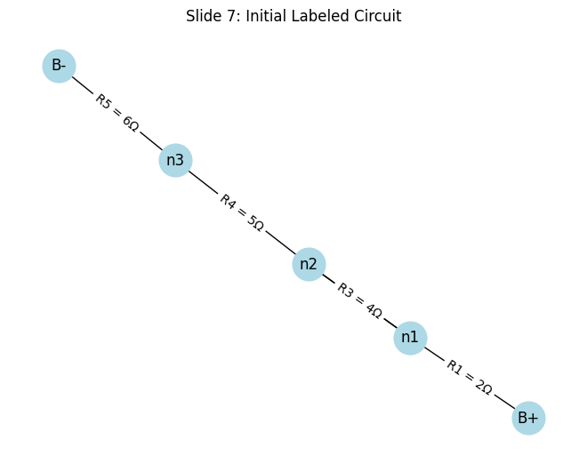
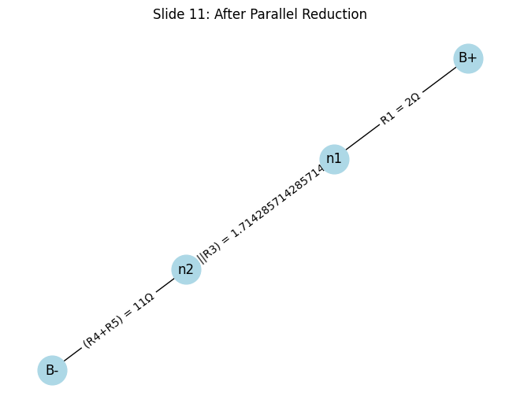
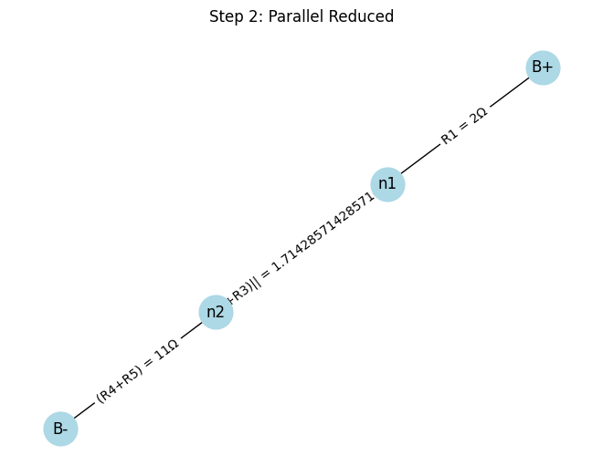
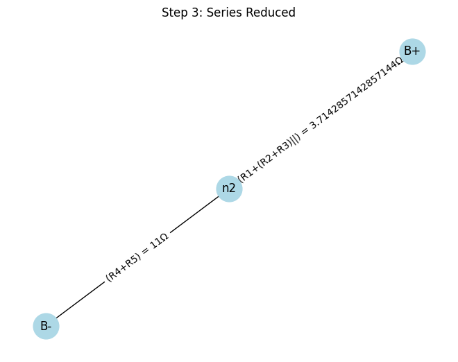
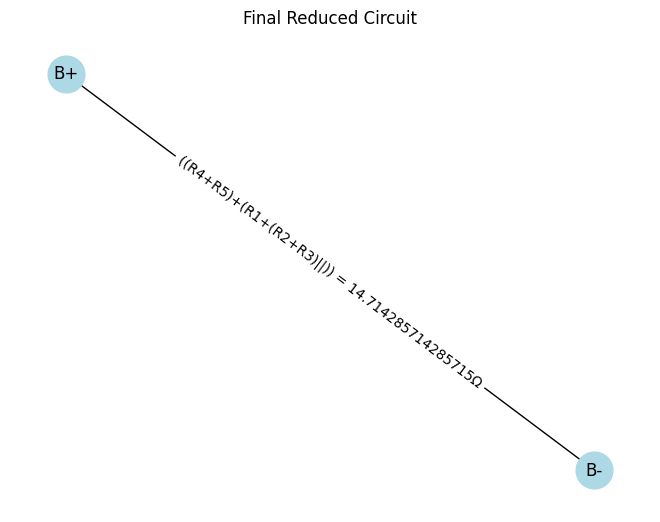

📠Slide 1: Title Slide
- Title: Equivalent Resistance Using Graph Theory
- Subtitle: A Systematic Approach to Simplifying Complex Circuits
📽 Animation Suggestion: Fade-in for title and subtitle, with a background image of a complex circuit.
💡 Slide 2: Motivation
Why Use Graph Theory for Equivalent Resistance?
- Traditional series/parallel rules become messy in complex circuits.
- Graph theory offers a structured, algorithmic approach.
-
Powerful for:
-
Circuit simulation tools
- Optimization engines
- Educational purposes
📈 Visual: Show a tangled resistor network vs. a neat graph.
🔗 Slide 3: Key Concept — Circuits as Graphs
Graph Representation:
- Nodes → Junctions
- Edges → Resistors (weights = resistance)
🖼️ Visual Aid: Circuit diagram on the left, graph on the right (linked by arrows).
🧠Analogy: Think of it like a road network with travel cost = resistance.
⚙️ Slide 4: Algorithm Overview
Step-by-Step Plan
function compute_equivalent_resistance(graph, source, sink):
while number_of_edges(graph) > 1:
detect all series pairs
if any found:
replace each series pair with an equivalent resistor
else:
detect all parallel pairs
replace each parallel pair with an equivalent resistor
return resistance between source and sink
🧠Goal: Reduce the graph to a single edge between source and sink.
🧪 Slide 5: Case Study Introduction
We’ll Walk Through an Example Circuit
- Circuit with resistors: \(R_1, R_2, R_3, R_4, R_5\)
- Source: \(B+\), Sink: \(B-\)
🖼️ Visual: Realistic resistor diagram with labels.
📊 Slide 6: Graph Representation
Graph Version of the Circuit
- Nodes: \(B+, n_1, n_2, n_3, n_4, B-\)
- Edges: Represent resistors with weights
👁️ Visual: networkx-based graph visualization
🧑‍💻 Slide 7: Python Code — Graph Creation
Initial Circuit Graph with networkx
import networkx as nx
import matplotlib.pyplot as plt
G = nx.Graph()
edges = [
('B+', 'n1', 2),
('n1', 'n2', 3),
('n1', 'n3', 4),
('n2', 'n3', 5),
('n2', 'B-', 6),
('n3', 'B-', 7)
]
for u, v, r in edges:
G.add_edge(u, v, resistance=r)
pos = nx.spring_layout(G)
nx.draw(G, pos, with_labels=True, node_color='lightblue', node_size=800)
labels = nx.get_edge_attributes(G, 'resistance')
nx.draw_networkx_edge_labels(G, pos, edge_labels={k: f"{v}Ω" for k, v in labels.items()})
plt.title("Initial Circuit Graph")
plt.show()
 📸 Output: Rendered interactive graph image.
🔄 Slide 8: Step 1 — Series Reduction
Detect and Replace Series Resistors
- Example: \(R_2\) and \(R_3\) in series → \(R_{23} = R_2 + R_3\)
ğŸ› ï¸ Visual: Before/after graph with series highlighted.
🧑‍💻 Slide 9: Python Code — Series Detection
def find_series_pairs(graph):
series_pairs = []
for node in graph.nodes:
if graph.degree[node] == 2:
neighbors = list(graph.neighbors(node))
if len(neighbors) == 2:
u, v = neighbors
r1 = graph[u][node]['resistance']
r2 = graph[v][node]['resistance']
series_pairs.append((u, node, v, r1 + r2))
return series_pairs
def merge_series_resistors(graph, u, mid, v, new_r):
graph.add_edge(u, v, resistance=new_r)
graph.remove_node(mid)
 🬠Action: Highlight which node gets removed in visualization.
🬠Action: Highlight which node gets removed in visualization.
🧲 Slide 10: Step 2 — Parallel Reduction
Detect and Replace Parallel Resistors
- Formula: \(R_{eq} = \frac{R_1 \cdot R_2}{R_1 + R_2}\)
🔠Visual: Two edges between same nodes → one edge
🧑‍💻 Slide 11: Python Code — Parallel Detection
from collections import defaultdict
def find_parallel_pairs(graph):
edge_counts = defaultdict(list)
for u, v, data in graph.edges(data=True):
edge_counts[frozenset((u, v))].append(data['resistance'])
parallels = []
for nodes, resistances in edge_counts.items():
if len(resistances) > 1:
u, v = tuple(nodes)
R_eq = 1 / sum(1/r for r in resistances)
parallels.append((u, v, R_eq))
return parallels
def merge_parallel_resistors(graph, u, v, new_r):
graph.remove_edges_from([(u, v)] * graph.number_of_edges(u, v))
graph.add_edge(u, v, resistance=new_r)
 📌 Tip: Use multigraphs for actual multiple edges, or simulate via attributes.
✅ Slide 12: Final Reduction
When Only One Edge Remains
- Only edge between \(B+\) and \(B-\)
- This edge's weight = total equivalent resistance
🧠Key Insight: Reduction is recursive and deterministic.
🧩 Slide 13: Full Function — All-in-One Solver
def compute_equivalent_resistance(graph, source, sink):
step = 1
while True:
series = find_series_pairs(graph)
if series:
u, mid, v, R = series[0]
merge_series_resistors(graph, u, mid, v, R)
else:
parallels = find_parallel_pairs(graph)
if parallels:
u, v, R = parallels[0]
merge_parallel_resistors(graph, u, v, R)
else:
break
step += 1
try:
return graph[source][sink]['resistance']
except KeyError:
return None
👨‍🏫 Usage:
R_eq = compute_equivalent_resistance(G, 'B+', 'B-')
print(f"Equivalent Resistance: {R_eq:.2f} Ω")





🔠Slide 14: More Complex Cases
Loops, Bridges, and Combinations
-
Can handle:
-
Nested branches
- Multi-path topologies
- Fully systematic!
🧠Analogy: Like simplifying a maze using rules.
⏱️ Slide 15: Efficiency & Optimization
Performance & Scaling
- Time complexity: Up to \(O(n^2)\)
-
Optimizations:
-
Priority queues for bottlenecks
- Memoization for subgraphs
- Use of
networkx.MultiGraphfor true parallel edges
⚙️ Advanced Tip: Integrate with SPICE or circuit solver engines.
🧠Slide 16: Conclusion
Key Takeaways
- Graph theory enables systematic, programmable simplification.
- Great for teaching, software, and automation.
- Bridges physics with computation.
💬 Quote:
"By treating circuits as graphs, we turn intuition into algorithms."
📚 Slide 17: References & Acknowledgments
-
Resources:
-
Introduction to Graph Theory by Douglas West
- The Art of Electronics by Horowitz & Hill
networkxandmatplotlibdocumentation-
Thanks:
-
Collaborators, mentors, and open-source libraries
🔚 Final Notes
-
Visual Polish:
-
Use color coding: red for series, blue for parallel.
- Animate graph reductions slide-by-slide.
-
Interactive Ideas:
-
Add sliders to change resistance values
- Live demo with Jupyter Notebook